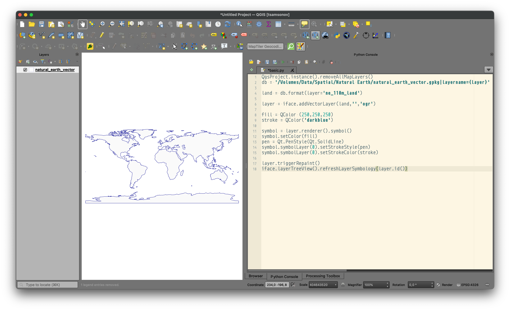

QgsProject.instance()1 Базовые операции рендеринга
1.1 Функции QGIS
Визуализация данных в QGIS возможна не только посредством графического интерфейса, но также путем программной компоновки карт. Преимущество программного отображения в QGIS по сравнению с тем, что вы можете сделать на чистом Python — в том, что становится доступен невероятно мощный функционал и производительность графического движка QGIS.
Первая операция, которая может быть полезной, это получение ссылки на экземпляр проекта:
Главное, для чего он может быть полезен — это управление списком отображаемых слоёв. Можно получить список слоев или удалить все слои из содержимого карты:
QgsProject.instance().mapLayers().values() # список слоёв
QgsProject.instance().removeAllMapLayers() # удаление всех слоёвЕсли необходимо чтобы скрипт собирал карту с нуля каждый раз при запуске, следует расположить вызов removeAllMapLayers() в самом начале. Это будет гарантировать, что сборка проекта начнется с чистого листа.
Сборку логично начать с добавления слоёв, которое осуществляется посредством следующей команды:
layer = iface.addVectorLayer(path)
layer = iface.addRasterLayer(path)где path — полный путь к данным, layer — переменная, которая будет хранить ссылку на слой в таблице содержания. Вы можете ее называть любым подходящим именем.
Обратите внимание на переменную iface. Это самая важная переменная в скрипте. Создавать её не нужно, она доступна всегда по умолчанию и представляет собой экземпляр класса QgsInterface. Через него вы получаете доступ к компоненте карты, меню, панелям инструментов и другим компонентам.
После того как слой добавлен на карту, можно заниматься его оформлением. Для того необходимо получить символику:
symbol = layer.renderer().symbol()В целом, не обязательно записывать символ в какую-то переменную, но если вы планируете осуществлять более чем одну настройку символа, то лучше это сделать, чтобы каждый раз не вызывать указанную последовательность функций.
Часть функций по оформлению слоя доступна непосредственно через объект символа. Например, глобальный цвет, толщину линии или размер пунсона можно задать следующим образом:
symbol.setColor(color) # заливка
symbol.setWidth(width) # толщина
symbol.setSize(size) # размергде color — объект класса QColor, определяющий цвет (см. далее).
Большинство же настроек символики делается через слои символов, извлечь каждый из которых можно следующим образом:
symbol.symbolLayer(i)где i — номер слоя символа. По умолчанию каждый символ имеет один слой с индексом 0. Для доступа к нему соответственно надо вызвать symbol.symbolLayer(0).
Например, цвет и паттерн линии или обводки полигона устанавливаются так:
symbol.symbolLayer(0).setStrokeColor(color) # цвет линии
symbol.symbolLayer(0).setStrokeStyle(style) # паттерн линиигде style — экземпляр класс PenStyle.
Для создания цветов и стилей линий существуют свои классы. Цвет можно создать по названию или цветовым компонентам:
color = QColor('azure')
color = QColor(120, 240, 75)А вот создание стиля линии делается не через нативные классы QGIS, а посредством классов библиотеки Qt, на которой реализован вообще весь QGIS:
style = Qt.PenStyle(Qt.NoPen) # Нет обводки
style = Qt.PenStyle(Qt.DotLine) # Пунктир
style = Qt.PenStyle(Qt.SolidLine) # СплошнаяПолный перечень стилей Qt согласно официальной документации выглядит так:

После того как вы настроили внешний вид слоя, необходимо сделать 2 вещи: инициировать его перерисовку на карте, а также обновить его легенду, для того чтобы она соответствовала символике. Делается это следующим образом:
layer.triggerRepaint() # перерисовать слой
iface.layerTreeView().refreshLayerSymbology(layer.id()) # обновить легендуОбратите внимание на то, что легендой слоя владеет не сам слой, а компонента таблицы содержания (layerTreeView).
Команды перерисовки карты и легенды должны быть вызваны для каждого слоя, оформление которого изменено программным путём. Если необходимо одинаковым образом обновить все слои карты (например, задать им прозрачность или покрасить в черный цвет), то это можно сделать в цикле:
layers = QgsProject.instance().mapLayers().values()
for layer in layers:
... # изменение символики
... # изменение символики
layer.triggerRepaint()
iface.layerTreeView().refreshLayerSymbology(layer.id())1.2 Пример использования
В данном примере рассматривается добавление на карту и раскрашивание полигона суши:
QgsProject.instance().removeAllMapLayers()
db = '/Volumes/Data/Spatial/Natural Earth/natural_earth_vector.gpkg|layername={layer}'
land = db.format(layer='ne_110m_land')
layer = iface.addVectorLayer(land,'','ogr')
fill = QColor (250,250,250)
stroke = QColor('darkblue')
symbol = layer.renderer().symbol()
symbol.setColor(fill)
pen = Qt.PenStyle(Qt.SolidLine)
symbol.symbolLayer(0).setStrokeStyle(pen)
symbol.symbolLayer(0).setStrokeColor(stroke)
layer.triggerRepaint()
iface.layerTreeView().refreshLayerSymbology(layer.id())Результат выглядит следующим образом:
